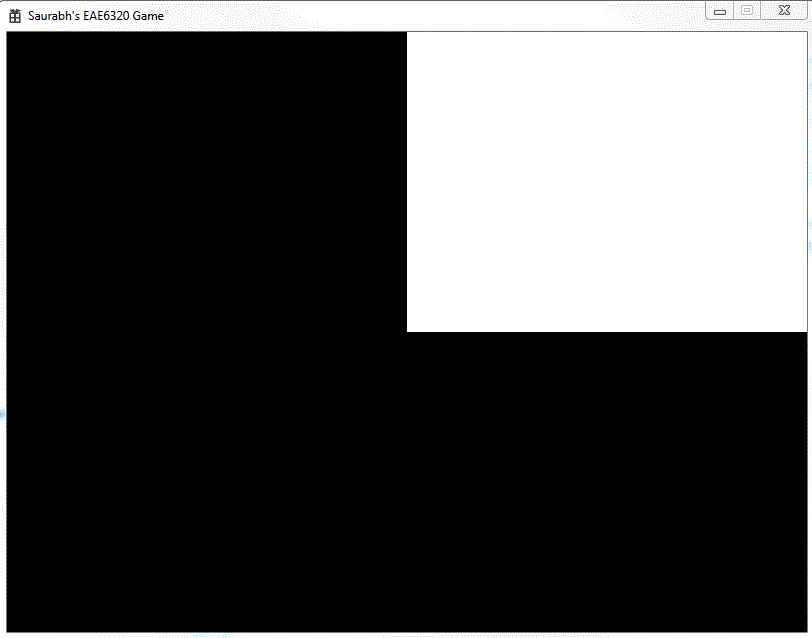

The assignment consisted of two parts; integrating Lua into the project and drawing a second triangle in order to form a square. We already had used Lua in the past, in EAE 6310, to process input for the game objects in the engine. Now we use it more extensively in our build pipeline. Currently Lua replaces some of the C++ code from our Asset Builder project, and calls some predefined C functions form the project.
The image shows the desired result in Direct3D. Even though the output is similar for OpenGL, the way we represent vertices and primitives (triangles) is completely opposite. Direct3D follows the Left hand orientation while OpenGL follows the Right hand orientation. Previously we had a single triangle, but now we have two triangles making a square (actually a rectangle depending on the resolution). I was stuck at a point in adding new vertices for the second triangle in OpenGL. I did add new values to the buffer in the code but missed the line where we write into the internal buffer. This mistake stopped me from getting the second triangle rendered on the screen. This forced me to read through most of the code in both Direct3D and OpenGL files. This will now help me in the next assignment.

The Lua script builds all the authored assets in the Assets folder and copies them to the data folder in the Game directory. The script is accessed from the ScriptDir macro. So we create a new folder called Scripts in the main directory. In Visual Studio, instead of adding it to a specific project, I created a separate solution folder. I do this because we will change the way we are building assets later in the development process. I shouldn’t have to reload any project for making changes in a script which is supposed to be independent of the engine. Also it is better to have all the scripts in a central point, instead of having them separated in different projects.
Some of the strengths of Lua as a scripting language are:
What Lua provides to the game can’t be offered by any other scripting language. We use Lua in this course so that we can learn more about it and its usage. Lua is popular in medium sized games as the advantages listed above can be used to the full extent. Smaller games may not require the use of a separate scripting language and all the work can be handled by the primary coding languages. Bigger games and studios can afford scripting languages which use CPU and memory more extensively and can do much advanced things than what Lua can.
Time Estimate
Reading: 1 hours
Coding: 3 hours
Testing and Fixes: 1 hour
Writeup: 1 hour
Download Links
Download Direct3D
Download OpenGL